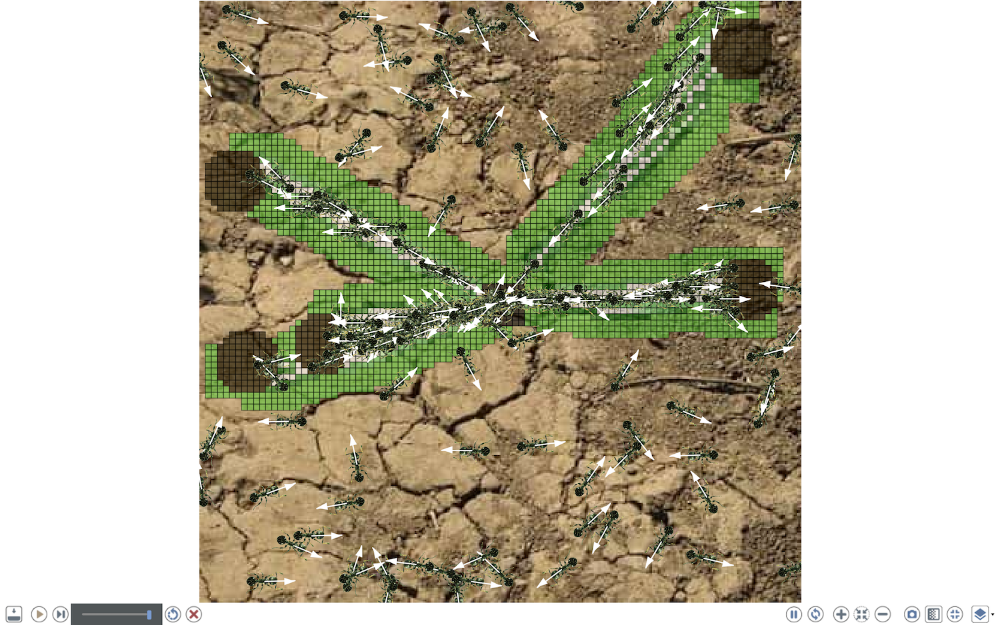
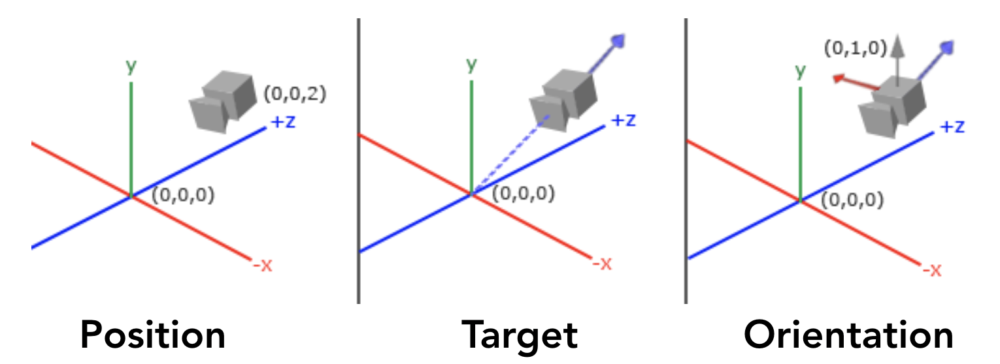

Displays
GAMA allows modelers to define several kinds of displays in a GUI experiment:
- java 2D displays
- OpenGL displays
These 2 kinds of display allow the modeler to display the same objects (agents, charts, texts ...). The OpenGL display offers extended features in particular in terms of 3D visualization. The OpenGL display offers also better performance when zooming in and out.
Table of contents
Classical displays (java2D)
The classical displays displaying any kind of content can be manipulated via the mouse (if no mouse event has been defined):
- the mouse left press and move allows to move the camera (in 2D),
- the mouse right click opens a context menu allowing the modeler to inspect displayed agents,
- the wheel allows the modeler to zoom in or out.

Each display provides several buttons to manipulate the display (from left to right):
- Pause or resume the current view: when pressed, the display will not be displayed anymore while the simulation is still running,
- Synchronize, when pressed, the display and the execution of the model are synchronized. Most of the time, this will reduce the speed of the simulation.
- Zoom in,
- Zoom to fit view,
- Zoom out,
- Take a snapshot: take a snapshot saved as a png image in the
snapshotsfolder of the model folder. - Toggle fullscreen ESC: when pressed, the current view will be displayed in fullscreen. To exit this mode, press
ESCkey. - Browse through all displayed agents: when pressed a browse view will be open. Only the species displayed can be browsed.
In addition to these commands, the contextual menu on the display provides three more commands (in "Presentation"):
- Toggle side controls, display/hide a left-side control pane.
- Toggle overlay: display/hide a semi-transparent toolbar on the bottom of the display, showing the coordinates of the mouse, the zoom, the number of fps (frame per second) of the simulation, and a scale (taking into account the zoom level).
- Toggle toolbar: display/hide the toolbar on the top of the display.
The Toggle side controls button opens a side panel in the display allowing the modeler to configure:
- General properties of the display: background and highlight colors, a button to activate/deactivate the antialiasing option and the Zoom rate.
- For each layer of the display, we can configure its visibility, transparency, position, and size of the layer. For grid layers, we can also show/hide grids. For species layers, we can also configure the displayed aspect. For text layers, we can choose the expression displayed with the color and the font. For the grid layers, we can choose to show or not the grid lines.
When the View is displayed in fullscreen mode, the toolbar is now located in the bottom of the View and contain in addition to the previously detailed toolbar, the toggle side-control, and overlay controls and controls of the experiment (run, pause, step...).

OpenGL displays
The OpenGL displays displaying any kind of content can be manipulated via the mouse (if no mouse event has been defined):
- same behaviors with left-click, right-click and wheel than in the Java2D displays.
commandpressed (on Mac OS) orCtrl(on Windows and Linux) +Left-Clickpressed + mouse move: it controls the camera and modify its location/target/orientation in a way that depends on the camera type (ArcBall or FreeFly).
Any OpenGL display has the same menu and buttons as the classical Java2D displays. Nevertheless, the sidebar provides more options to manage camera, keystones and other options related to OpenGL displays management:
- General: the General panes contains some common controls with the java2D displays (antialiasing, background and highlight color, and the zoom rate). But it adds the 2 following options:
- Z-axis rotation: it sets a rotation angle around the Z-axis of all the agents displayed.
- Continuous rotation: (false by default), when it is set to true, all the agents of the current display will rotate continuously and automatically around the Z-axis. The value in the Z-axis rotation field will be used as the rotation speed around the axis.
- Camera:
- FreeFly Camera: switch between cameras, the default camera is the Arcball one.
- Lock Camera: when set to true, it prevents the user from altering the camera position, target or orientation.
- Preset Camera: this option allows the user to select a given camera configuration among a set of built-in ones. As an example, the From top preset will set the camera above the simulation environment and set its orientation to its center.
- Position, Target and Orientation will set very precisely the camera configuration: Position is the location coordinates of the camera, Target is the point the camera is looking at and Orientation is a rotation vector around the X-axis of the camera (see image below inspired by the OpenGL tutorial.
- A Copy as facet button can also be clicked to save the values of the camera configuration in the clipboard encoded in a GAML facet. This can then be pasted in the
displayof your model to reuse this camera configuration at the next experiment run.

- OpenGL: this pane provides several options in terms of visualization that are allowed by the OpenGL technology (image below illustrates the following two options).
- View as wireframe: display all the agents with only the wireframe of their aspect.
- Split layers: each layer of the current display will be displayed at a different elevation.
- Split distance: set the distance between 2 layers when they are split.
- Keystone: the keystone allows to modify the location of the 4 corner points of the environment bounding box. This is really important when the simulation is projected on a screen or a 3D map as the projector can introduce some image distortions.
- A Copy as facet button can also be clicked to save the values of the keystone configuration in the clipboard encoded in a GAML facet. This can then be pasted in the
displayof your model to reuse this configuration at the next experiment run.
- A Copy as facet button can also be clicked to save the values of the keystone configuration in the clipboard encoded in a GAML facet. This can then be pasted in the
ArcBall camera commands
| Key | Function |
|---|---|
| Double Click | Zoom Fit |
| + | Zoom In |
| - | Zoom Out |
| Up | Vertical movement to the top |
| Down | Vertical movement to the bottom |
| Left | Horizontal movement to the left |
| Right | Horizontal movement to the right |
| CTRL or CMD + Up | Rotate the model up (decrease the phi angle of the spherical coordinates) |
| CTRL or CMD + Down | Rotate the model down (increase the phi angle of the spherical coordinates) |
| CTRL or CMD + Left | Rotate the model left (increase the theta angle of the spherical coordinates) |
| CTRL or CMD + Right | Rotate the model right (decrease the theta angle of the spherical coordinates) |
| SPACE | Reset the pivot to the center of the envelope |
| KEYPAD 2,4,6,8 | Quick rotation (increase/decrease phi/theta by 30°) |
| CTRL or CMD + LEFT_MOUSE | Makes the camera rotate around the model |
| ALT+LEFT_MOUSE | Begins Agent Selection using an ROI (Region of Interest) |
| SHIFT+LEFT_MOUSE | Draws an ROI on the display, allowing to maintain it across frames |
| SCROLL | Zoom-in/out to the current target (center of the sphere) |
| WHEEL CLICK | Reset the pivot to the center of the envelope |
FreeFly camera commands
| Key | Function |
|---|---|
| Double Click | Zoom Fit |
| + | Zoom In |
| - | Zoom Out |
| Up | Move forward |
| Down | Move backward |
| Left | Strafe left |
| Right | Strafe right |
| SHIFT+Up | Look up |
| SHIFT+Down | Look down |
| SHIFT+Left | Look left |
| SHIFT+Right | Look right |
| MOUSE | Makes the camera look up, down, left and right |
| MouseWheel | Zoom-in/out to the current target (center of the screen) |